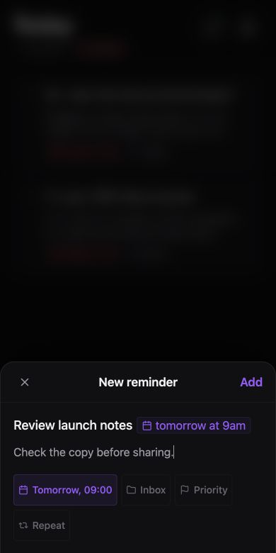

Your vault, in sync.
Bring notes, attachments, renames, and deletes across your Obsidian devices.
See how sync worksBuilt around your Obsidian vault
Write it in Obsidian. Pick it up on your phone.
Crate keeps your vault and reminders connected.
Early release · Manual installation · Your Cloudflare account
Keep the context. Make the next step clear.
Check the copy before sharing.
Try it: complete a reminder and watch the Markdown update.
One vault across your devices.
Your next step stays with the note.
You own the sync infrastructure.
Fits into the way you work
Keep your vault and its next steps together, from Obsidian to the companion web app.
Bring notes, attachments, renames, and deletes across your Obsidian devices.
See how sync worksGive a reminder a date, keep its context, and enable optional push notifications.
Meet your remindersReminders live in ordinary notes. Every edit in Crate finds its way back to your vault.
Try the connectionA little more intention. A little less switching.
Keep the next step beside the thinking that led to it. Crate gives your Markdown reminders a place of their own inside Obsidian.

Inbox, Today, and Upcoming keep the right reminders in view.
Group reminders into projects while keeping them in your vault.
Add dates, priorities, descriptions, and repeating reminders.
The same Crate, wherever you are
Open the companion app on your phone. Capture a task, add a natural date, and get back to your day. It saves to the same Markdown in your vault.

One connection. Your infrastructure.
Crate connects your devices through your own Cloudflare account. Your files live in your R2 bucket, with no separate Crate account to create.
When edits conflict, Crate preserves a copy for you to review. Keep a separate backup of your vault.
Crate does not provide end-to-end encryption. Your Cloudflare account and Worker can access synced data.
From your vault to your other devices
Bring Obsidian 1.13.0 or newer and a Cloudflare account with R2 enabled.
Build the plugin from source, add it to your vault, and enable Crate in Obsidian’s community plugin settings.
Select Connect with Cloudflare in Crate settings. Sign in, review permissions, and create your server.
Upload your vault to the new server. Connect your other Obsidian devices and enroll the companion app.
Early release · Manual installation
Cloudflare plan limits and usage charges may apply.
Crate is an Obsidian plugin for vault sync and reminders. The companion web app gives you access to your reminders on the go; Obsidian remains the home for your full vault.
Your local vault stays on your devices. Synced files are stored in your own Cloudflare R2 bucket. Your Cloudflare account and Worker can access that data; Crate does not provide end-to-end encryption.
You do not need a separate Crate account or subscription. You connect using your own Cloudflare account, where Cloudflare’s resource limits and possible usage charges apply.
The companion app caches reminder and project content for offline use. A connection is needed to sync changes with your server. Signing out clears its cached data and drafts.
Crate is currently installed manually from source. Follow the installation guide to build and copy the plugin into your vault. Start with a test vault while you get familiar with this early release.
Your notes, reminders, and devices. Connected with Crate.
Get started with Crate